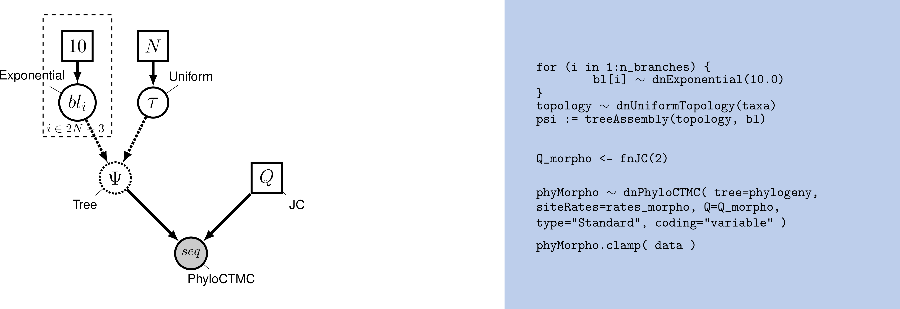

RB_MCMC_Discrete_Morph.RmdWhile molecular data have become the default for building phylogenetic trees for many types of evolutionary analysis, morphological data remains important, particularly for analyses involving fossils. The use of morphological data raises special considerations for model-based methods for phylogenetic inference. Morphological data are typically collected to maximize the number of parsimony-informative characters - that is, the characters that provide information in favor of one topology over another. Morphological characters also do not carry common meanings from one character in a matrix to the next; character codings are made arbitrarily. These two factors require extensions to our existing phylogenetic models. Accounting for the complexity of morphological characters remains challenging. This tutorial will provide a discussion of modeling morphological characters, and will demonstrate how to perform Bayesian phylogenetic analysis with morphology using RevBayes .
Graphical model showing the Mk model (left panel). Rev code specifying the Mk model is on the right-hand panel.
Molecular data forms the basis of most phylogenetic analyses today. However, morphological characters remain relevant: Fossils often provide our only direct observation of extinct biodiversity; DNA degradation can make it difficult or impossible to obtain sufficient molecular data from fragile museum specimens. Using morphological data can help researchers include specimens in their phylogeny that might be left out of a molecular tree.
To understand how morphological characters are modeled, it is important to understand how characters are collected. Unlike in molecular data, for which homology is algorithmically determined, homology in a character is typically assessed by an expert. Biologists will typically decide what characters are homologous by looking across specimens at the same structure in multiple taxa; they may also look at the developmental origin of structures in making this assessment . Once homology is determined, characters are broken down into states, or different forms a single character can take. The state 0 commonly refers to absence, meaning that character is not present. In some codings, absence will mean that character has not evolved in that group. In others, absence means that that character has not evolved in that group, and/or that that character has been lost in that group . This type of coding is arbitrary, but both non-random and meaningful, and poses challenges for how we model the data.
Historically, most phylogenetic analyses using morphological characters have been performed using the maximum parsimony optimality criterion. Maximum parsimony analysis involves proposing trees from the morphological data. Each tree is evaluated according to how many changes it implied in the data, and the tree that requires the fewest changes is preferred. In this way of estimating a tree, a character that does not change, or changes only in one taxon, cannot be used to discriminate between trees (i.e., it does not favor a topology). Therefore, workers with parsimony typically do not collect characters that are parsimony uninformative.
In 2001, Paul Lewis introduced a generalization of the Jukes-Cantor model of sequence evolution for use with morphological data. This model, called the Mk (Markov model, assuming each character is in one of k states) model provided a mathematical formulation that could be used to estimate trees from morphological data in both likelihood and Bayesian frameworks. While this model is a useful step forward, as a generalization of the Jukes-Cantor, it still makes fairly simplistic assumptions. This tutorial will guide you through estimating a phylogeny with the Mk model, and two useful extensions to the model.
The Mk model is a generalization of the Jukes-Cantor model of nucleotide sequence evolution, which we discussed in the CTMC tutorial. The Q matrix for a two-state Mk model looks like so:
\[Q = \begin{pmatrix} -\mu_0 & \mu_{01} \\ \mu_{10} & -\mu_1 &\\ \end{pmatrix} \mbox{ ,}\]
This matrix can be expanded to accommodate multi-state data, as well:
\[Q = \begin{pmatrix} -\mu_0 & \mu_{01} & \mu_{02} & \mu_{03} \\ \mu_{10} & -\mu_1 & \mu_{12} & \mu_{13} \\ \mu_{20} & \mu_{21} & -\mu_2 & \mu_{23} \\ \mu_{30} & \mu_{31} & \mu_{32} & -\mu_3 \end{pmatrix} \mbox{ ,}\]
However, the Mk model sets transitions to be equal from any state to any other state. In that sense, our multistate matrix really looks like this:
\[Q = \begin{pmatrix} -(k-1)\mu & \mu & \mu & \mu \\ \mu & -(k-1)\mu & \mu & \mu \\ \mu & \mu & -(k-1)\mu & \mu \\ \mu & \mu & \mu & -(k-1)\mu \\ \end{pmatrix} \mbox{ ,}\]
Because this is a Jukes-Cantor-like model , state frequencies do not vary as a model parameter. These assumptions may seem unrealistic. However, all models are a compromise between reality and generalizability. Prior work has demonstrated that, in many conditions, the model does perform adequately . Because morphological characters do not carry common meaning across sites in a matrix in the way that nucleotide characters do, making assumptions that fit all characters is challenging. A visualization of this simple model can be seen in above graphical model.
We will first perform a phylogenetic analysis using the Mk model. In further sections, we will explore how to relax key assumptions of the Mk model.
When Lewis first introduced the Mk model, he observed that branch lengths on the trees were greatly inflated. The reason for this is that when morphological characters are collected, characters that do not vary, or vary in a non-parsimony-informative way (such as autapomorphies) are excluded. Excluding these low-rate characters causes the overall amount of evolution to be over-estimated. This causes an inflation in the branch lengths .
Therefore, when performing a morphological phylogenetic analysis, it is important to correct for this bias. There are numerous statistically valid ways to perform this correction . Original corrections simulated invariant and non-parsimony informative characters along the proposed tree. The likelihood of these characters would then be calculated and used to normalize the total likelihood value. RevBayes implements a dynamic programming approach that calculates the same likelihood, but does so faster.
In this example, we will use morphological character data from extinct and extant bears (Abella et al. 2012). The dataset contains 62 binary characters, a fairly typical dataset size for morphological characters.
Tutorial Format
This tutorial follows a specific format for issuing instructions and information.
The boxed instructions guide you to complete tasks that are not part of the RevBayes syntax, but rather direct you to create directories or files or similar.
Information describing the commands and instructions will be written in paragraph-form before or after they are issued.
All command-line text, including all Rev syntax, are given in monotype font. Furthermore, blocks of Rev code that are needed to build the model, specify the analysis, or execute the run are given in separate shaded boxes. For example, we will instruct you to create a constant node called example that is equal to 1.0 using the <- operator like this:
It is important to be aware that some PDF viewers may render some characters given as differently. Thus, if you copy and paste text from this PDF, you may introduce some incorrect characters. Because of this, we recommend that you type the instructions in this tutorial or copy them from the scripts provided.
Data and Files
On your own computer, there should be a directory called data. It should contain:
ants.nex.
Getting Started
Create a new directory (in
DiscreteMorphology) called scripts.
When you execute RevBayes in this exercise, you will do so within the main directory (APB2019), thus, if you are using a Unix-based operating system, we recommend that you add the RevBayes binary to your path. Alternatively make sure that you set the working directory to, for example, APB2019 if this is the directory you stored the scripts and data in.
Creating Rev Files
In this exercise, you will work primarily in this R text editor and create a set of files that will be easily managed and interchanged.
In this section you will begin the file and write the Rev commands for loading in the taxon list and managing the data matrices. Then, starting in section Mk Model, you will move on to specifying each of the model components. Once the model specifications are complete, you will complete the script with the instructions given in section
Load Data Matrices
RevBayes uses the function readDiscreteCharacterData() to load a data matrix to the workspace from a formatted file. This function can be used for both molecular sequences and discrete morphological characters. Import the morphological character matrix and assign it to the variable morpho. We will be using a matrix of extant and fossil data from Abella (2012).
Create Helper Variables
Before we begin writing the Rev scripts for each of the models, we need to instantiate a couple “helper variables” that will be used by downstream parts of our model specification.
Create a new constant node called num_taxa that is equal to the number of species in our analysis (41) and a constant node called num_branches representing the number of branches in the tree. We will also create a constant node of the taxon names. This list will be used to initialize the tree.
Next, create two workspace variables called mvi and mni. These variable are iterators that will build a vector containing all of the MCMC moves used to propose new states for every stochastic node in the model graph. Each time a new move is added to the vector, mvi will be incremented by a value of 1.
One important distinction here is that mvi is part of the RevBayes workspace and not the hierarchical model. Thus, we use the workspace assignment operator = instead of the constant node assignment <-.
First, we will create a joint prior on the branch lengths and tree topology. This should be familiar from the {% page_ref ctmc %}
br_len_lambda ~ dnExp(0.2)
moves[mvi++] = mvScale(br_len_lambda, weight=2)
phylogeny ~ dnUniformTopologyBranchLength(taxa, branchLengthDistribution=dnExponential(br_len_lambda))
moves[mvi++] = mvNNI(phylogeny, weight=num_branches/2.0)
moves[mvi++] = mvSPR(phylogeny, weight=num_branches/10.0)
moves[mvi++] = mvBranchLengthScale(phylogeny, weight=num_branches)
tree_length := phylogeny.treeLength()Next, we will create a \(Q\) matrix. Recall that the Mk model is simply a generalization of the JC model. Therefore, we will create a 2x2 \(Q\) matrix using fnJC, which initializes Q-matrices with equal transition probabilities between all states.
Now that we have the basics of the model specified, we will add Gamma-distributed rate variation and specify moves on the parameter to the Gamma distribution.
[ [ -1.0000, 0.1667, 0.1667, 0.1667, 0.1667, 0.1667, 0.1667 ] ,
0.1667, -1.0000, 0.1667, 0.1667, 0.1667, 0.1667, 0.1667 ] ,
0.1667, 0.1667, -1.0000, 0.1667, 0.1667, 0.1667, 0.1667 ] ,
0.1667, 0.1667, 0.1667, -1.0000, 0.1667, 0.1667, 0.1667 ] ,
0.1667, 0.1667, 0.1667, 0.1667, -1.0000, 0.1667, 0.1667 ] ,
0.1667, 0.1667, 0.1667, 0.1667, 0.1667, -1.0000, 0.1667 ] ,
0.1667, 0.1667, 0.1667, 0.1667, 0.1667, 0.1667, -1.0000 ] ] alpha_morpho ~ dnUniform( 0, 1E6 )
rates_morpho := fnDiscretizeGamma( alpha_morpho, alpha_morpho, 4 )
#Moves on the parameters to the Gamma distribution.
moves[mvi++] = mvScale(alpha_morpho, lambda=1, weight=2.0)Lastly, we set up the CTMC.
We see some familiar pieces: tree, \(Q\) matrix and site_rates. We also have two new keywords: data type and coding. The data type argument specifies the type of data - in our case, “Standard”, the specification for morphology.
phyMorpho ~ dnPhyloCTMC(tree=phylogeny, siteRates=rates_morpho, Q=Q_morpho, type="Standard")
phyMorpho.clamp(morpho)All of the components of the model are now specified.
Create Model Object
We can now create our workspace model variable with our fully specified model DAG. We will do this with the model() function and provide a single node in the graph (phylogeny).
The object mymodel is a wrapper around the entire model graph and allows us to pass the model to various functions that are specific to our MCMC analysis.
Specify Monitors and Output Filenames
The next important step for our Rev-script is to specify the monitors and output file names. For this, we create a vector called monitors that will each sample and record or output our MCMC.
The first monitor we will create will monitor every named random variable in our model graph. This will include every stochastic and deterministic node using the mnModel monitor. The only parameter that is not included in the mnModel is the tree topology. Therefore, the parameters in the file written by this monitor are all numerical parameters written to a tab-separated text file that can be opened by accessory programs for evaluating such parameters. We will also name the output file for this monitor and indicate that we wish to sample our MCMC every 10 cycles.
The mnFile monitor writes any parameter we specify to file. Thus, if we only cared about the branch lengths and nothing else (this is not a typical or recommended attitude for an analysis this complex) we wouldn’t use the mnModel monitor above and just use the mnFile monitor to write a smaller and simpler output file. Since the tree topology is not included in the mnModel monitor (because it is not numerical), we will use mnFile to write the tree to file by specifying our phylogeny variable in the arguments.
The third monitor we will add to our analysis will print information to the screen. Like with mnFile we must tell mnScreen which parameters we’d like to see updated on the screen.
Once we have set up our model, moves, and monitors, we can now create the workspace variable that defines our MCMC run. We do this using the mcmc() function that simply takes the three main analysis components as arguments.
The MCMC object that we named mymcmc has a member method called .run(). This will execute our analysis and we will set the chain length to 10000 cycles using the generations option.
Once our Markov chain has terminated, we will want RevBayes to close. Tell the program to quit using the q() function.
q()With all the parameters specified and all analysis components in place, you are now ready to run your analysis. RevBayes cannot run inside the RStudio window. So we will need to copy our code out of RStudio. Luckily, the knitr package makes this very easy. Run the following in the console:
knitr::purl("vignettes/RB_Discrete_Morphology/RB_MCMC_Discrete_Morph.Rmd")This will create a .R file containing our analysis script. Move it into the scripts folder and rename it to mk_gamma.Rev
Begin by running the RevBayes executable. In Unix systems, type the following in your terminal (if the RevBayes binary is in your path): rb
Provided that you started RevBayes from the correct directory, you can then use the source() function to feed RevBayes your Rev-script file (mk_gamma.Rev).
When the analysis is complete, RevBayes will quit and you will have a new directory called output that will contain all of the files you specified with the monitors.
As we discussed, there is reason to believe a lognormal distribution may fit morphological data better than a gamma. RevBayes makes it very natural to discretize any distribution you might like to work with.
rates_morpho := fnDiscretizeDistribution( dnLognormal(ln(alpha_morpho), 0.01), 4 )Can you figure out which line you might replace with this code? Do it, and change your output files to indicate that this is estimation uses a lognormal distribution. Re-run your Rev script.
As discussed earlier in the section Ascertainment_Bias, we also need to correct for ascertainment bias.
Create a copy of your previous
Revscript, and call it mcmc_Mkv.Rev. You will need to modify theRevcode provided in this section in this file.
In RevBayes it is actually very simple to add a correction for ascertainment bias. You only need to set the option coding="variable" in the dnPhyloCTMC. Coding specifies what type of ascertainment bias is expected. We are using the variable correction, as we have no invariant character in our matrix. If we also lacked parsimony non-informative characters, we would use the coding informative.
phyMorpho ~ dnPhyloCTMC(tree=phylogeny, siteRates=rates_morpho, Q=Q_morpho, type="Standard", coding="variable")